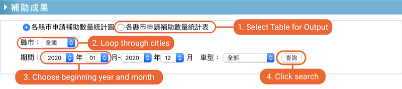
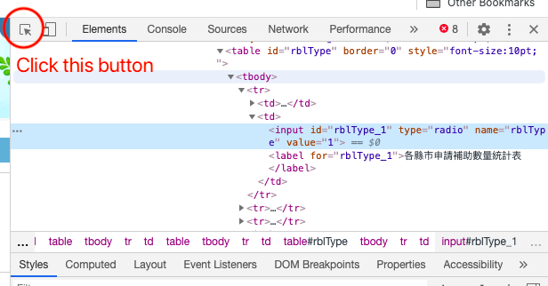
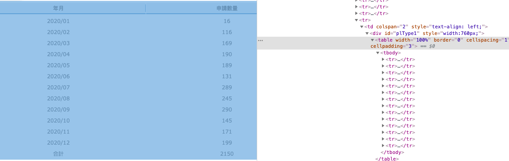

Automate Data Collection with Selenium in Python
In Spring 2020, I conducted research on Taiwan’s subsidy on electric scooters for my Environmental Economics course. Since electric scooters are more expensive than gasoline ones, I wanted to know whether the policy actually created incentives for people to purchase electric scooters, and I needed data.
I immediately ran into the first challenge that I could not get the data. More specifically, the type of data, which is monthly subsidised counts for each city in Taiwan from 2009 to 2020. The only way to get it is by going to the website, looping through every city and month, and downloading the information. I decided that it would be faster for me to figure out how to automate the process. This script is for automating electric scooter subsidies data collection process on the Taiwan EPA website, using Python and Selenium Webdriver.
Initial Setup
I used Visual Studio Code and Google Chrome and set up a virtual environment. Firstly, I downloaded chromedriver and use the terminal on my Macbook to move the file to user bin.
mv ~/Downloads/chromedriver /usr/local/binNext, I created the folder, file, virtual environment, and interactive shell.
mkdir EPA_Bot #Create Python script file
touch EPABot.py #Set virtual environment (inside the folder)
virtualenv venv # Activate virtual environment
source venv/bin/activate #Install selenium
pip install selenium #Set interactive shell
python -i EPABot.pyWebdriver & Chrome
Once everything is set up, import libraries and fire up the Webdriver to open the destination webpage.
from selenium import webdriver
from time import sleep
from selenium.webdriver.support.ui import Select
import csvdriver = webdriver.Chrome()
driver.get('https://www.lev.org.tw/subsidy/result.aspx')Chrome should open a new window and redirect to the specified URL.

Referencing the screenshot with annotations above, here are what I want to achieve with the script:
- Select table for output (not graph)
- Select the city
- For each city, select the beginning year and month
- Click search
- Wait for the data to be populated to an HTML table
- Scrape the HTML table and record the data
- Repeat again for the next city until all 23 cities are done
- Collect all data and put them in a data frame, export to CSV
When you browse a website and click a link, you actually performed 2 tasks: one is finding the element and one is selecting. Since the script cannot see the webpage (in some sense), you will need to specify which element and what to do. Selenium has a detailed documentary on how to locate elements. Overall, the process follows:
- Open the webpage and wait for it to be loaded
- Right-click and select inspect (You can also use View Page Source, but Inspect is interactive as shown in the video)
- Make sure the top right panel is on Element
- Click the button highlighted in the following image, hover to the element, and click. The Element panel should highlight the code for that element.
- Right-click the highlighted code, click Copy, click Copy XPath

I needed to locate 5 elements: table output option, city, beginning year, beginning month, and search button. However, not all elements are created equal. City, year, and month are dropdown menus while the others are buttons. For buttons, the process contains two steps: locate the element and click.
# table output option
tbl = driver.find_element_by_xpath('//*[@id="rblType_1"]')
tbl.click()For dropdown menus, it’s a bit more complicated because I wanted to loop through all cities. I needed to 1) locate the dropdown menu element, 2) get all menu options, 3) select an option. This is done with Select from selenium.webdriver.support.ui. Without looping, the process is similar to buttons.
# get dropdown city options
city = Select(driver.find_element_by_xpath('//*[@id="ddlCity"]'))
city_list = city.options
# loop through the cities
for c in range(len(city_list)):
# the same element
city = Select(driver.find_element_by_xpath('//*[@id="ddlCity"]'))
# not click but select
city.select_by_index(c)# No Loop
# find the dropdown element
yr = driver.find_element_by_xpath('//*[@id="ssStartYear"]')
# find the option from that element
yro = yr.find_element_by_xpath('//*[@id="ssStartYear"]/option[12]')
# click the option
yro.click()
# search button
search_btn = driver.find_element_by_xpath('//*[@id="btSel"]')
search_btn.click()
driver.implicitly_wait(2)I specifically asked the Webdriver to wait 2 seconds before proceeding. Once the search result is loaded, the script can start scraping the data in the table. As shown in the screenshot, the result is contained in a table. The table has a table body that includes multiple tr or table rows. So I needed the script to iterate through all rows and extract the data.

Selenium makes it easy to do so. Instead of find_element_by_xpath, I can use find_elements_by_xpath. Please note the s following the element. The XPath for the first row is //*[@id="plType1"]/table/tbody/tr[1], so I delete the bracket and the number to identify all table rows. Looping through each row, I used .text to get the text in the row.
# locate tr
tablerow = driver.find_elements_by_xpath('//*[@id="plType1"]/table/tbody/tr')
result = []for row in tablerow:
# each row has two columns
tdata = [td.text for td in row.find_elements_by_class_name('font-g12')]
data = [i for i in tdata]
results.append({'city': c, 'data': data})Since the purpose is to collect data, Python will put search results in a dictionary. However, the table is dynamic and I had trouble figuring out how to format the results in a way that I want. That’s why I had to clean the output in excel afterwards. After the loop is done, csvwriter will write all the information from the dictionary in a CSV file.
Putting Everything Together
I wrote a class for all the steps, so I can repeatedly run the script and get the latest data.
class EPABot():
def __init__(self):
self.driver = webdriver.Chrome()
def open(self):
self.driver.get('https://www.lev.org.tw/subsidy/result.aspx')
self.driver.implicitly_wait(10)
def select(self):
table_select = self.driver.find_element_by_xpath('//*[@id="rblType_1"]')
table_select.click()
city = Select(self.driver.find_element_by_xpath('//*[@id="ddlCity"]'))
str_yr = self.driver.find_element_by_xpath('//*[@id="ssStartYear"]')
city_list = city.options
results = []
for c in range(len(city_list)):
sleep(5)
city = Select(self.driver.find_element_by_xpath('//*[@id="ddlCity"]'))
city.select_by_index(c)
str_yr = self.driver.find_element_by_xpath('//*[@id="ssStartYear"]')
str_yr_opt = str_yr.find_element_by_xpath('//*[@id="ssStartYear"]/option[12]')
str_yr_opt.click()
str_mo = self.driver.find_element_by_xpath('//*[@id="ssStartM"]')
str_mo_opt = str_mo.find_element_by_xpath('//*[@id="ssStartM"]/option[1]')
str_mo_opt.click()
end_yr = self.driver.find_element_by_xpath('//*[@id="ssEndYear"]')
end_yr_opt = end_yr.find_element_by_xpath('//*[@id="ssEndYear"]/option[1]')
end_yr_opt.click()
end_mo = self.driver.find_element_by_xpath('//*[@id="ssEndM"]')
end_mo_opt = end_mo.find_element_by_xpath('//*[@id="ssEndM"]/option[12]')
end_mo_opt.click()
search_btn = self.driver.find_element_by_xpath('//*[@id="btSel"]')
search_btn.click()
self.driver.implicitly_wait(2)
tablerow = self.driver.find_elements_by_xpath('//*[@id="plType1"]/table/tbody/tr')
print(c,'cities done!')
for row in tablerow:
tdata = [td.text for td in row.find_elements_by_class_name('font-g12')]
data = [i for i in tdata]
results.append({'city': c, 'data': data})
sleep(5)
with open('results.csv', 'w', newline="") as csv_file:
writer = csv.DictWriter(csv_file, fieldnames = ['city', 'data'])
writer.writeheader()
for result in results:
writer.writerow(result)I forgot to add the following part in the gist to actually execute the script:
bot = EPABot()
bot.open()
bot.select()Conclusion
I briefly explained how to use selenium for automation and provided a full script for example. I hope this post helps whoever is working with selenium. While the time it took to figure out the process was probably longer than the time to manually download the data, I had fun!
If you want to view the GitHub repository, click here.
The post was initially written on 17 February 2020 and duplicated to Medium on 29 December 2020. The study was completed with the guidance from Dr Wilcoxen and Dr Popp of the Maxwell School.